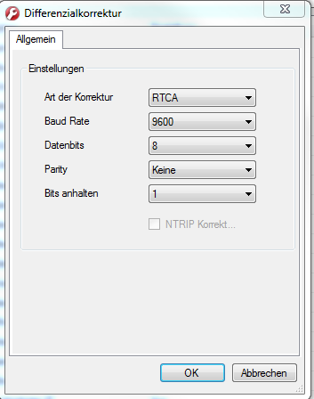

Mi 14.09.2016 14:25
Laatzen Umstellung auf Position hier
Passat 990 IP-Adresse RT:
RT4000, v.1
192.168.16.25 [RT4000]
52.3041
9.8339

Einstellung Ffm
 Laatzen
Laatzen
Fr 09.09.2016 10:52
Passat 660:
USB rechte Seite verwendet
Di 21.06.2016 14:45
IP-Adresse PC: 195.0.0.1
RT-System 195.0.0.45
Configuration RT-4000
Unter Verzeichnis OxTS NAVconfig auswählen
Dort werden RT4000 mit v2.x auswählen
- CAN auswählen für CAN-Botschaften einzustellen
- Differeniell auswählen, um die Baudrate einzustellen 9600 +/- eine Stufe

- Ortskoordinaten auswählen, um fest koordinaten vorzugeben